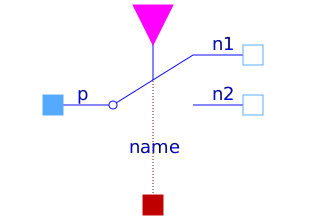
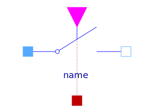

This package hosts ideal models for quasi stationary single phase circuits. Quasi stationary theory for single phase circuits can be found in the references.
| Name | Description |
|---|---|
| Idle branch | |
| Short cut branch | |
|  IdealCommutingSwitch | Ideal commuting switch |
|
|
Ideal intermediate switch |
|
|
Ideal electrical opener |
|  IdealClosingSwitch | Ideal electrical closer |